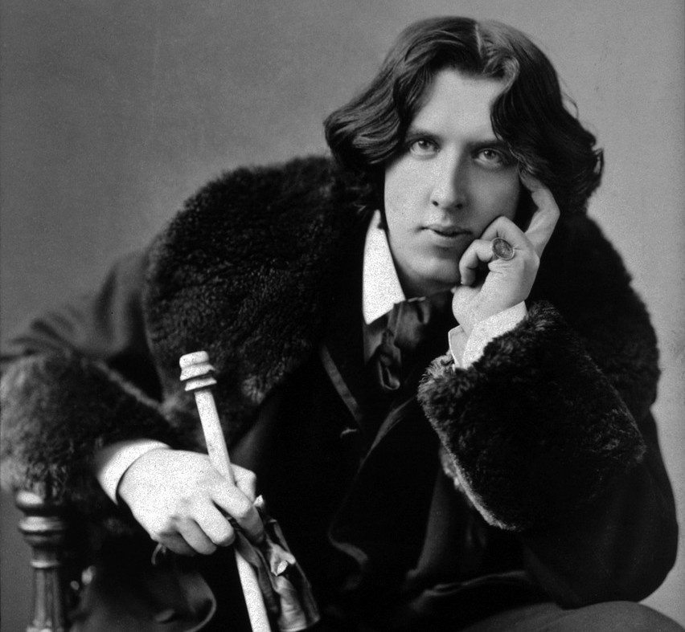
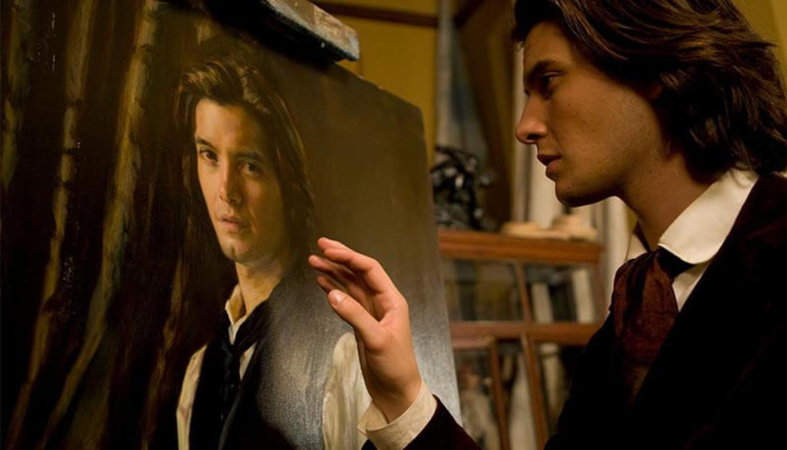

Oscar Wilde: Aestheticism and Hypocrisy
I decided to choose Oscar Wilde and his masterpiece for my exam because I am deeply fascinated by how he used his writing to challenge the strict rules and hypocrisy of Victorian society.
His Life: From Triumph to Tragedy
Born in Dublin in 1854, Wilde received an excellent education at Oxford. He established himself in London as a poet, essayist, and an extraordinary playwright, writing comedies such as The Importance of Being Earnest. However, his lifestyle as a flamboyant "dandy" took a dramatic turn in 1895. Due to his homosexual relationship, he was put on trial and convicted of "gross indecency". Sentenced to two years of hard labor, he emerged broken and spent his final years in exile in France, until his death in 1900.

His Masterpiece: The Picture of Dorian Gray (1890)
The work that best captures Wilde’s aesthetic philosophy is his only novel, The Picture of Dorian Gray. The plot revolves around Dorian, a young man of extraordinary beauty. He expresses a wish to stay young forever, desiring that a portrait painted by his friend alter instead of his own face. Influenced by Lord Henry Wotton, Dorian throws himself into a life of hedonism.
While Dorian retains his outward purity, the portrait transforms into a hideous monster, reflecting his corrupt soul and sins. Eventually, overwhelmed by guilt, Dorian stabs the canvas. The spell is broken: the portrait returns to its original beauty, while Dorian dies, instantly transforming into a wrinkled, loathsome old man. This novel serves as the ultimate parable of Aestheticism: art outlives time, whereas physical beauty is destined to fade away.
